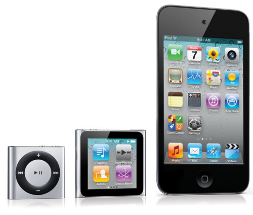

Ipods
 Visite a páginaiPod é uma marca registada da Apple Inc. e refere-se a uma série de media players portáteis projetados e vendidos pela Apple. Desde 2008, a linha de iPods inclui o iPod classic, o iPod shuffle, o iPod nano e o iPod touch. Outros produtos antigos incluíam o iPod mini e o iPod Photo, mas agora estão incluídos na linha do classic. Os aparelhos da família iPod oferecem uma interface simples para o usuário, centrada no uso de uma roda clicável. O modelo de maior capacidade de armazenamento de mídia, foi o iPod classic, utilizava um disco rígido acoplado,[1] enquanto todos outros modelos utilizam memória flash. Como a maioria dos tocadores portáteis digitais, o iPod pode servir como um armazenador de dados quando conectado a um computador. Mas o modelo mais arrojado da linha dos iPods funciona e parece com o iPhone; o iPod touch, respondendo ao toque na tela, e permitindo o usuário acessar a Internet sem fio (wireless, wi-fi 802.11b/g) além de poder usar todos os aplicativos do iPhone.